V1: GIS 基本機能（Re:Earth GeoSuite 上位互換）
Re:Earth GeoSuite の GIS・デジタルツイン機能を包含し、KASUGAI 独自の拡張を加えた上位互換の実装です。各機能の設定書式は .kasc 設定仕様、バージョン横断の実装詳細（描画順・ドレープ・高さ基準・制限）は V0: システム基本構成 を参照してください。
📝 インスペクター一括設定
プロジェクトの設定は projects/<id>/kasugai_canvas.kasc に行単位のテキストとして記述します。管理（⚙）→ プロジェクト → インスペクター でテキスト全体を確認・編集でき、「適用」で即時反映されます。レイヤー行は 種類: 名前 | URL | オプション の形式で、xyz: / 3dtiles: / geojson: / geoparquet: / flatgeobuf: / gpkg: / duckdb: / sql: / kml: / wfs: / shp: / csv: / cloud: 参照 / base: / info: / cam: / legend: / fly_geojson: 等を扱えます。テキストベースなので .kasc ファイルをそのまま共有・版管理できます。
🗺️ ベースマップ
base: または xyz: 行で定義した XYZ/TMS タイルをベースマップとして扱い、ツールバーの Basemap セレクタで1つだけアクティブにします。「ベースマップなし」は背景を透過し、「ベースマップ透明」は地表色と背景を透過しつつ XYZ ドレープと地形の高さを維持します。セレクタ横の 🌐 アイコンは、現在の視点（位置・高度・方位・傾き）を Google Earth 形式に変換して新しいウィンドウで開きます。
🔧 システムレイヤ制御
layer: 行で既存レイヤー名を指定し、表示/非表示を初期状態として制御します。プロジェクトを開いた時点で特定レイヤーだけを見せたい場合に使います。非表示にされたベクターレイヤーはロード自体もスキップされ、表示ON・検索・フィルター変更のタイミングで初めて取得されます。
➕ レイヤー追加・管理
XYZ タイル・3D Tiles・GeoJSON などを URL 指定で追加できます。ローカルサーバー版では DATA/ 内ファイルや cloud: スキームのクラウド上ファイルもレイヤーとして読み込めます。追加したレイヤーは Layers パネルで表示切替・並べ替えでき、設定（.kasc）に永続化されます。
📑 レイヤー一覧UI
読み込んだレイヤーを一覧し、チェックで表示切替、ドラッグ＆ドロップで並び替えができます。各行の 📍 ボタンでレイヤー全体の範囲へフォーカス（FlyTo）します。並べ替えた順序は ImageryLayerCollection の lower/raise や DataSource の index に反映され、表示切替や排他グループ動作は並べ替え後も維持されます。
📂 レイヤーグループ化
レイヤー名に / を含めるとフォルダのようなグループに、// を含めると排他グループ（同時に1つだけ表示・ラジオボタン的動作）になります。地物カテゴリの切替や対比表示に使えます。
🖼️ 凡例表示
legend: 行で凡例画像の URL を指定すると Legend タブに一覧表示します。複数行で複数の凡例を登録できます。凡例画像は静的ファイル・外部 URL・ローカル DATA/ 内ファイルのいずれも使えます。
🔎 住所検索
国土地理院の住所検索 API（既定）と Yahoo Local Search API（yahooAppId 設定で有効化）を使い、住所・施設名で検索してクリックで FlyTo します。Google Maps Platform の Geocoding / Places を使うハイブリッド検索は V4 の Google 連携側の機能です。
検索窓は座標の直接入力にも対応しており、「35.681,139.767」「139.767,35.681」（経度・緯度順も可）、「N35°41' E139°46'」「35度41分 139度46分」のような度・度分秒表記を入力すると、ジオコーディングを介さずその地点へ直接 FlyTo します。
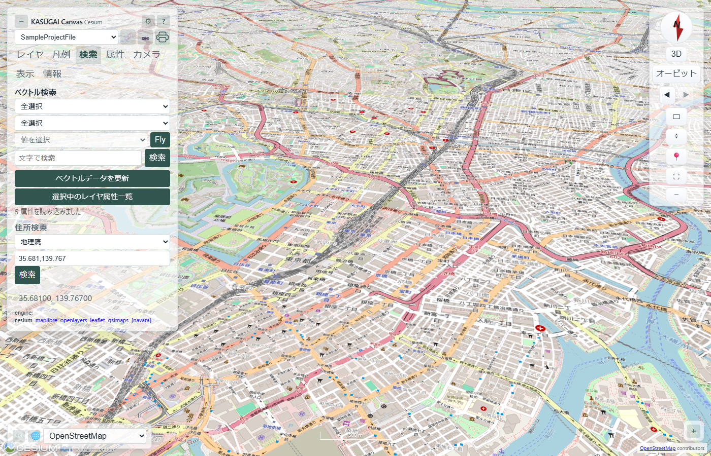
🧬 ベクトル検索
読み込み済みベクター（GeoJSON/GeoParquet/FlatGeobuf 等の全件読み込み系）の属性値を「レイヤー → 属性 → 値」の三段階またはテキスト検索で絞り込み、行クリックで FlyTo します。対象範囲は「全選択（非表示・未読込レイヤーも検索時に読み込んで対象化）」「表示レイヤ」「個別レイヤー」から選べます。クエリ系レイヤー（duckdb:/sql:/gpkg:）は索引ではなく SQL フィルター側で検索する設計のため対象外です。
📊 属性・値一覧
選択中または全ベクターレイヤーの属性・値を表形式で一覧し、文字列検索・列ソート・行クリック FlyTo に対応します。クエリ系レイヤーも選択肢に出し、内容は DB に対して直接クエリして取得します（検索索引ではなく全件対象）。
🎥 カメラプリセット
cam: 名前 | 緯度 | 経度 | 高さ | pitch | heading 形式で登録した位置へ、Camera パネルのボタンでワンクリック FlyTo します。プレゼンの導線（Chapter 的な視点遷移）として使えます。
ℹ️ Info 表示
info: 行で指定した外部 HTML を Info タブに表示します。スクリプト等はサニタイズされ、プロジェクト説明・参考資料・凡例ドキュメントの埋め込みに使えます。
📤 Share（位置情報共有）
カメラ位置（緯度・経度・高さ・heading・pitch）を URL ハッシュに保持し、タブバー右端の 🔗 ボタンで同じ視点を再現するリンクをクリップボードへコピーします。ハッシュ形式のためカメラ移動で URL が自動更新され、開いた側はアニメーション付きでその視点へ FlyTo します。プロジェクト指定はクエリ（?project=）に保持されます。この形式は MapLibre / OpenLayers の .kasc プレイヤーとも共通で、同じ URL を ?engine= 指定で別エンジンへ渡すと同じ地点が復元されます（詳細は V0 の URL パーマリンク節）。
🗺️ GeoJSON 3D ドレープ制御
ベクターレイヤーが「地面 / Terrain（DEM）/ 3D Tiles」のどの面に追従するかを、インスペクター行のオプションまたは表示 → ドレープ パネルで切り替えます。地形ありの現地調査資料では張り付き先の選択が見え方を左右します。詳細な仕組みは V0 の地形・ドレープ節 を参照してください。
🛡️ ベクター描画件数の上限
表示 → ドレープ タブで entity 描画ベクターの合計件数バジェットを制限します（既定 20000・0/空欄=無制限）。上限超過時は「ファイル先頭 N 件」ではなく表示範囲内の地物を優先して描画し、カメラ移動で追従します。切り捨ては描画のみで、検索索引・属性一覧は常に全件対象です。一覧には shown/total バッジが出ます。
⛰️ Terrain / Shadow
地形表示と影表示をワンクリックで ON/OFF します。地形ソースは Re:Earth Terrain（楕円体高 / 標高）と国土地理院 DEM（5m+10m / 1m、TP基準）から選択可能で、CesiumWorldTerrain は Ion アクセスが必要なため同梱していません。高さ基準の違い（楕円体高 / 標高）は数十 m のずれになるため、3D Tiles の高さ基準に合わせた選択が必要です（詳細）。
🧭 ナビゲーション
ナビゲーションツールバー（地図右端・折りたたみ可）には、方位コンパス・2D/3D 切替・Orbit/Fly モード切替・北リセットに加え、表示系の便利ツールを2列グリッドで配置しています。Orbit は通常の地球閲覧、Fly はプレゼン用の飛行モード（V2）です。これらのツールは全エンジン共通で、Cesium 以外のエンジンでは共有モジュール（web/shared/nav-tools.js）が同一 UI・同一操作を提供します。
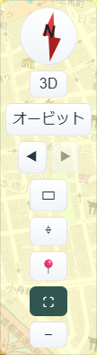
- 表示履歴 ◀ / ▶ — シングルクリックで1つ前/次の視点へ戻る・進む（最大100件）。ダブルクリックで番号付きの履歴一覧を開き、任意の時点へ直接ジャンプできます。一覧は新しい順で現在位置は ● 印、各行には国土地理院の逆ジオコーディングで取得した概算地名を併記します。キーボードショートカットは Alt+← / Alt+→。
- 矩形ズーム ▭ — ボタンでモード切替、または Shift+ドラッグで即時起動。右下方向へドラッグした矩形が画面全体に拡大され、左上方向へドラッグするとその逆変換で縮小します（ドラッグ中は枠線の色で縮小を予告）。傾斜視点では矩形中心を軸にした倍率ズームに切り替わります。Esc でドラッグをキャンセル。
- 地点座標取得 ⌖ — ボタンで十字カーソルの座標取得モードになり、地図をクリックするとその地点の座標ポップアップを表示します。座標は「座標表示形式」設定（度/DMS/UTM/平面直角座標系）に従い、国土地理院逆ジオコーダーの行政区画名・muniCd を併記します。「コピー」でクリップボードへ、「ピン」で共有 GeoJSON レイヤーとして地図にピンを蓄積（属性を持つため後から属性検査可能・全エンジン共通レイヤー）、「クリア」で全ピンを削除します。
- 現在地 📍 — クリックで位置追従の ON/OFF。ON の間は watchPosition で青い現在地マーカー（精度円付き）を表示し、3秒以上経過した更新でカメラも追従します。
- フルスクリーン ⛶ — ドキュメント全体をフルスクリーン化 / 解除します。
- スクリーンショット 📷 — プロジェクトセレクタ横の 📷 ボタンで表示中の地図を PNG 保存します（ファイル名は
kasugai_canvas_YYYY-MM-DD-HH-MM-SS.png）。
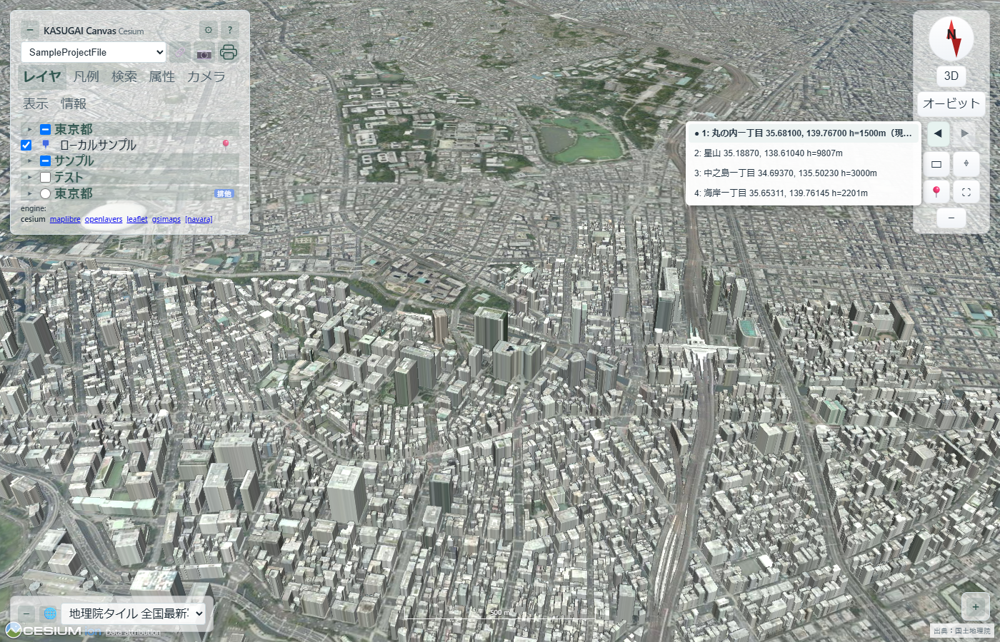
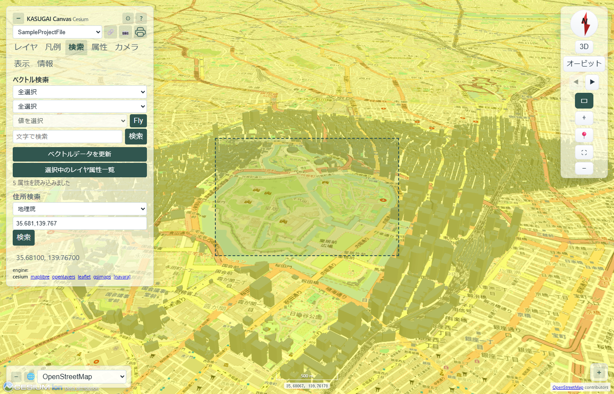
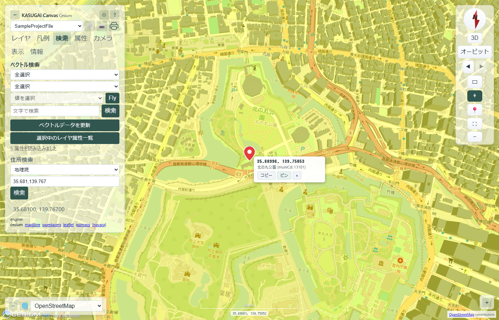
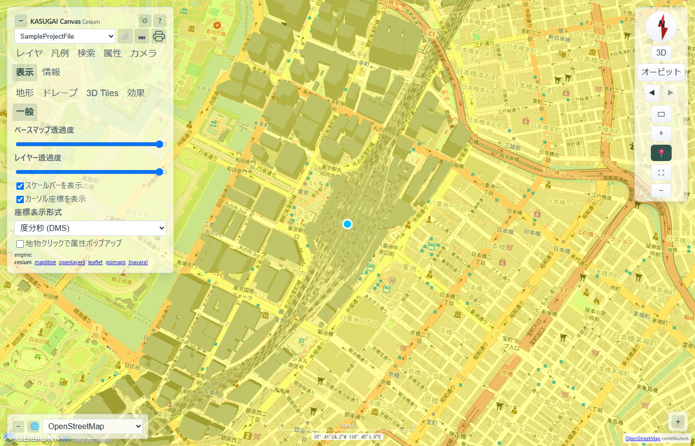
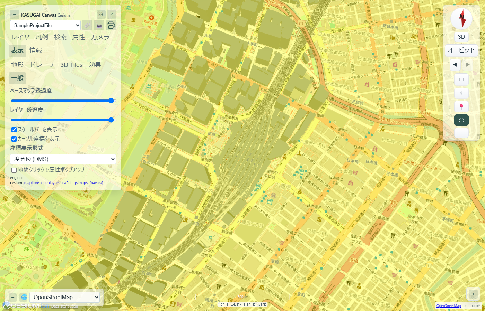
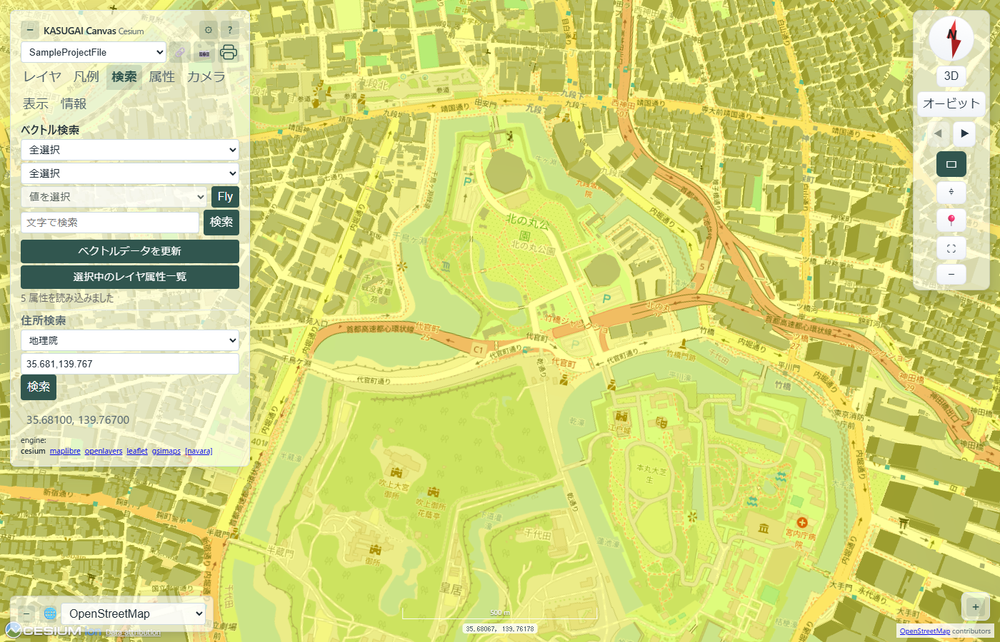
📊 属性（Attr）表示
地物をクリックすると属性を Attr パネルに一覧表示します。重なった地物（ポリゴン等の面重なり）は scene.drillPick で最大16件を手前から順に拾い、件数付きヘッダー一覧として表示し、行クリックで個別属性を展開します。3D Tiles（構造化メタデータ Cesium3DTileFeature）・ベクター（entity/primitive）の各描画経路を同じ形式に正規化して扱います。
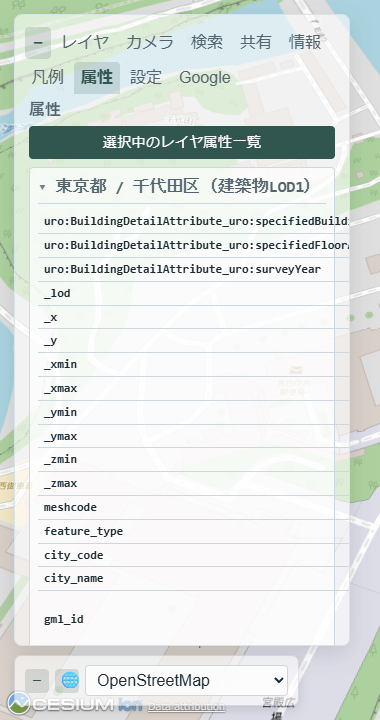
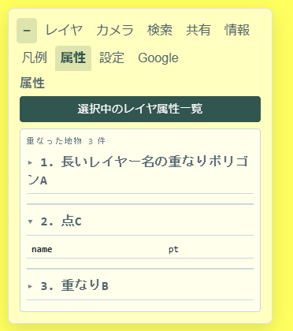
📐 座標表示形式・測地系
表示 → 一般タブの「座標表示形式」（度(10進) / 度分秒(DMS) / UTM / 平面直角座標系 I〜XIX系）と「測地系」（JGD2024・JGD2011 / JGD2000 / 日本測地系）のセレクトで、カーソル座標・地点座標ポップアップ・座標コピーの形式を切り替えられます。平面直角の系番号は最近傍原点から自動選択します。内部の座標はすべて WGS84 で一元管理しており、WGS84 ネイティブの緯度経度（度・度分秒・既定測地系）以外の表示には （参考値） が付きます。JGD2000・日本測地系など他測地系の座標は国土地理院の公式変換パラメータ（TKY2JGD / PatchJGD）で変換した参考値であり、現在位置の WGS84 と固定時点の測地成果とは地殻変動分の差が累積するため、測量成果としての利用は想定していません（詳細は V0 の座標・測地系の扱い節）。
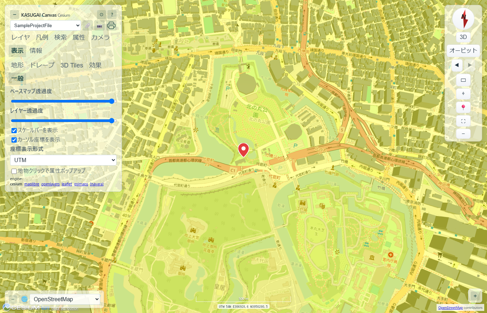
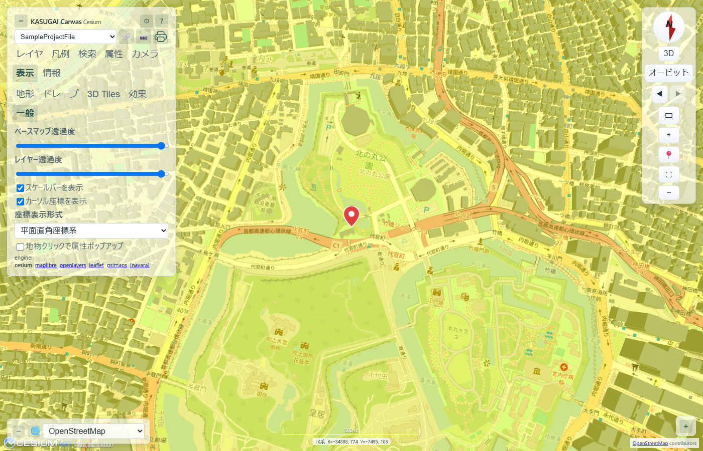
🗺️ ミニマップ（オーバービュー）
表示 → 一般タブの「ミニマップを表示」で、画面左下に小さな2Dオーバービュー地図を表示します。現在の表示範囲が赤い矩形で示され、ミニマップ上をクリックするとその地点へ現在の高度・姿勢のまま移動します。タイルは選択中のベースマップ（XYZ テンプレート）を追従し、テンプレートでない場合は地理院淡色地図を表示します。Leaflet は ON にした時点で CDN から遅延ロードするため、未使用時のコストはありません。
🛠️ ツール（計測・断面・見通し・グリッド・エクスポート）
画面上部中央のツールバー（ツールドック）に集約された GIS 解析ツール群です。レイヤパネルの🧰ボタンで開閉し、未使用時は画面上部に何も表示されません。バーのボタンで各ツールのパネルをドロップダウン表示し、計測・作図などの地図対話モード開始時は自動で畳まれます。すべてブラウザ完結・静的配信のみで動作し、オンデマンド動作のため未使用時の描画コストはありません。
対応エンジン: Cesium・MapLibre・OpenLayers・Leaflet・GSI Maps（iframe 内 Leaflet へ描画）で全機能、Navara はエクスポートのみ（地物ピック非対応のため計測・断面・見通しは未提供）。2D エンジンでは共有モジュール（web/shared/geo-tools-2d.js）が同一 UI・同一 API を提供し、標高サンプリングは MapLibre の DEM タイルまたは地理院標高APIを使います。
- 計測（距離・面積・方位） — 左クリックで頂点を追加、ダブルクリックで確定（Esc で中断・クリアボタンで消去）。距離は測地線（EllipsoidGeodesic）で区間ラベルと総延長を表示、面積は接平面シューレース近似＋周囲長、方位は2点の初方位・逆方位・距離を表示します。地形追従クリックのため 3D 表示時も地表値です。
- 標高断面 — 「ラインを描く」で折れ線を入力すると距離-標高の断面グラフを表示（サンプル数 10〜500・既定100）。地形 ON 時は TerrainProvider、OFF 時や未対象域は地理院標高APIへフォールバックします。グラフ上のホバー位置は地図上のマーカーと連動し、最高/最低/累積上り・下りの統計も表示します。
- 選択・集計 — 矩形（2点）・ポリゴン（頂点クリック＋ダブルクリック）・円（中心＋半径入力）で範囲を描き、対象レイヤ（全ベクター可）内の地物を空間選択。包含・辺交差まで判定し、結果はハイライト＋件数＋代表名表示。「選択をレイヤー化」で選択地物を新規一時レイヤーにできます。続けてポリゴン内集計（集計キー＋数値列で count/sum/avg/min/max）とバッファ生成（描画範囲または選択地物に距離 m のバッファを新規レイヤー化。点は測地線円、ライン/ポリゴンは turf.js を遅延ロード）も行え、生成したバッファはそのまま次の選択範囲として使えます。
- 作図・注記 — ポイント・ライン・ポリゴン・注記（文字付きマーカー）を描いて名称を付けて保持。「レイヤーへ追加」で一時レイヤー化（表示切替・属性一覧・エクスポート対象）または GeoJSON ファイルへ保存できます。
- 見通し判定（LOS） — 観測点・対象点（各地表からの高さオフセット指定可）を指定すると、160点の地形サンプリングと視線を比較して「可 / 不可（遮蔽点の距離つき）」を判定。視線は可視部=緑・遮蔽部=赤で描画され遮蔽点がマークされます。
- 緯度経度グリッド — 表示 → 一般タブのトグルで緯線・経線と度ラベルをオーバーレイ表示。カメラ範囲に応じた nice-step 間隔で moveEnd 追従します。
- エクスポート — ツールバーの「エクスポート」でベクターレイヤを選び、形式を指定してダウンロード（クエリ系=bbox=auto 等は読み込み済み範囲のみになるため
*印で明示）。形式は GeoJSON / CSV / TSV / KML / FlatGeobuf / Shapefile（.zip 同梱）。CSV・TSV はジオメトリをWKT列として出力する QGIS の CSV エクスポート（GEOMETRY=AS_WKT）互換で、UTF-8 BOM 付き・3D 座標はZ修飾付きです。Shapefile はジオメトリ種別ごとに分割した .shp/.shx/.dbf/.prj/.cpg を ZIP にまとめます。すべてブラウザ内で生成するため CDN ホスト版でも動作します。属性・値一覧にも CSV / TSV ボタンがあり、検索フィルタ・ソート適用後の全行を UTF-8 BOM 付き（Excel 文字化け対策）・代表点 lon/lat 列付きで出力します。
これらは AI からも操作できます。ボタン類は安定 id を持つため controlUi で自動列挙され、地図操作を伴う処理は measureDistance・measureArea・measureBearing・elevationProfile・lineOfSight・setGraticule・exportLayer・spatialSelect・aggregateWithin・createBuffer の専用 API（CHAT_TOOLS 宣言・executeChatTool 配線済み、AI ツール仕様）で実行できます。
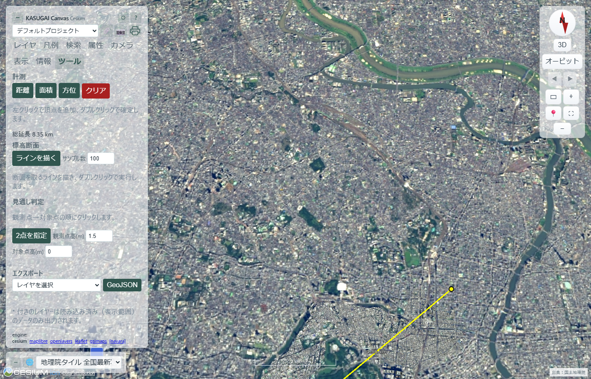
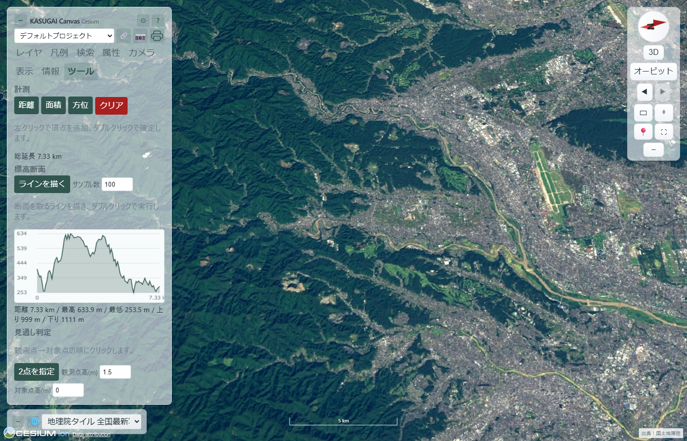
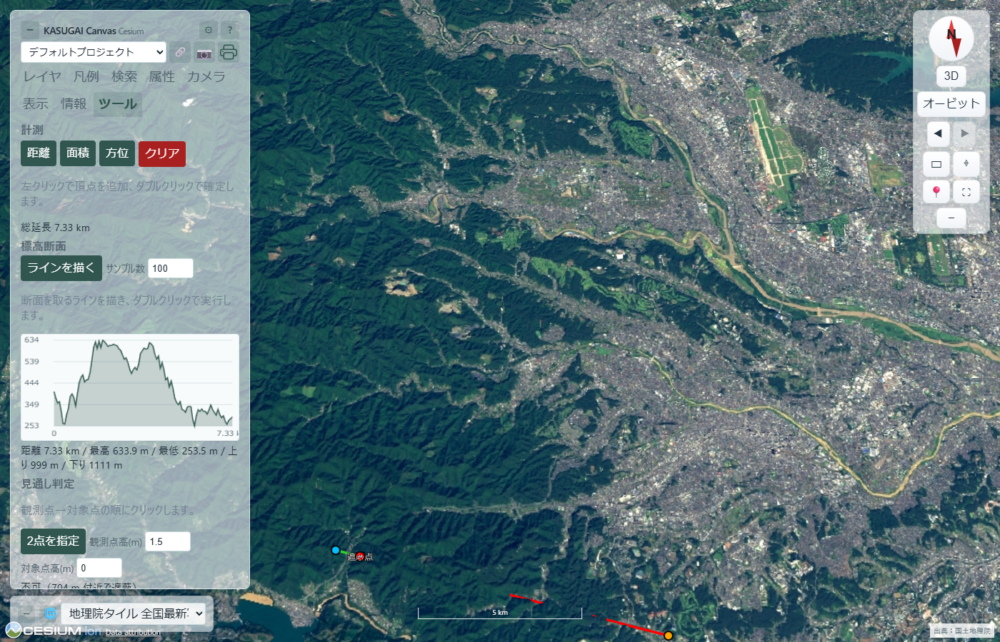
🌐 多言語対応（8言語）
UI は英語・日本語・中国語・韓国語・スペイン語・フランス語・ドイツ語・ポルトガル語の8言語に対応しています。管理（⚙）→ その他 の言語セレクタで即時切替でき、初回はブラウザ言語から自動判定します（未対応言語は英語）。選択は localStorage に保存され、AIチャットの回答言語も UI 言語に追随します。翻訳の基準言語は英語（en.json がフォールバック辞書）です。
🖨️ 印刷・帳票出力
ツールドック（レイヤパネルの🧰ボタンで開く）の「エクスポート」にある 印刷 ボタンで印刷ダイアログを開き、表示中の地図にタイトル・凡例・縮尺バー・方位記号・出典・日付を付けた帳票（A4/A3・縦横・150/300dpi）を生成します。「印刷」はブラウザの印刷ダイアログへ（PDF 保存も可能）、「PNG保存」は合成画像をダウンロードします。QGIS(geo_webview)の HTTP サーバーが検出できた場合のみ「QGIS レイアウトPDF」セクションが表示され、QGIS の印刷レイアウトをそのまま PDF 出力できます（QGIS 側の /layouts・/layout-pdf エンドポイントを利用）。タイルが CORS 未対応で地図画像を取得できない場合は、地図なしの帳票にフォールバックします。